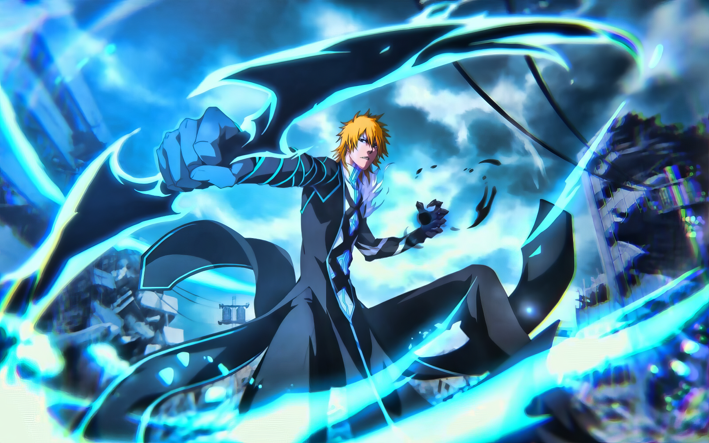

Aniwatch
Aniwatch site ahol anime-t lehet nezni,
INGYEN.
Egyik leg megbizhatobb web oldala.
Ezen a weboldalon megtalálható sok anime, többek közt az alul említettek.
Dragon Ball Z
Dragon Ball Z egy Japán anime, amita Toei Animation készít. Folytatasa az 1986-os Dragon Ballnak. 1989 és 1995 között volt kiadva.
Bleach

Bleach iegy Japan anime sorozat. 2004-ben adtak ki legelöször. Narutoval és One Piece-el együtt alkossák a Big 3-ben.
Blue Lock Manga
Blue Lock egy 2022 márciusban megjelent sport anime, ami a 2022 decemberi VB után NAGYON hiressé vált.
The Rising of the Shield Hero
The Rising of the Shield Hero 2019 januárban jelent meg legelöször. Egy akciódús, pszihologikus anime.